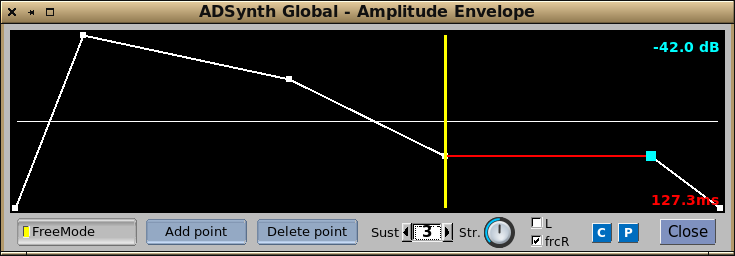
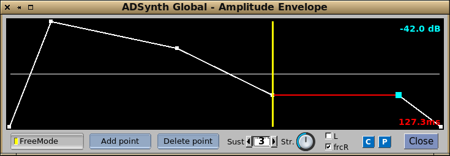

There are actually four envelope types. The bandwidth one in SubSynth has identical controls to the frequency envelope.
 

This window shows a freemode enabled envelope. This is where all the normal controls have been assigned to fully editable points. Not only that, but you can add points up to a maximum of 40. This allows you to develop extremely detailed and expressive envelopes.
The yellow vertical is the sustain/release point, and you can have new points both sides of it.